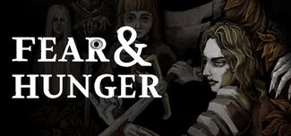

Fear & Hunger (Miedo y Hambre) es un videojuego de rol creado por Miro Haverinen en 2018 que combina elementos de survival horror y simulación inmersiva. El primer juego se desarrolla en un entorno moderno temprano de fantasía oscura y sigue a uno de los cuatro personajes jugables mientras se adentra en las mazmorras de Fear & Hunger, enfrentándose a trampas mortales, acertijos y monstruos a medida que avanzan hacia las profundidades. 
Termina es la secuela del primer juego se lanzo en 9 de diciembre de 2022 y está ambientado en el mismo universo en la década de 1940, unos 300 años después de los acontecimientos del primer juego. Tiene lugar en la ciudad "Prehevil", basado en la ciudad "Praga" de la república Checa y sigue a 14 extraños que se ven obligados a participar en el "Festival de Termina" titular durante tres días
El juego fue diseñado casi exclusivamente por Miro Haverinen. En una entrevista, afirmó que la idea del juego nació en su etapa escolar, cuando proponía a sus compañeros hipótesis moralmente incómodas que se llevarían a cabo en un calabozo morboso. El primer demo de Fear & Hunger sirvió como parte práctica de la tesis académica de Haverinen. Haverinen ha declarado que la inspiración para el juego surgió del deseo de crear una sensación de oscuridad implacable y experimentar diferentes maneras de evocar desesperanza y terror. Silent Hill, Hellraiser, amnesia: The Dark Descent, NetHack, Berserk, los juegos Souls y Mortal Kombat fueron nombrados como inspiraciones por Haverinen.
SINOPSIS oficial
Fear & Hunger is a horror dungeon crawler set in the dark and hopeless dungeons of fear and hunger. Four misfortuned adventurers dwell deeper and deeper to the darkness and uncover the secrets this ancient fortress holds inside. The fortress works as an ancient nexus for different planes of existence. The depths are in an eternal turmoil as both old and new gods struggle for power, it’s up to the players to choose their position and stance in all of this. The game is a hybrid of survival horror and dungeon crawler genres with its influences ranging from Silent Hill to Nethack. There are roguelike elements to the game as well as a heavy foundation of a j-RPG. Fear & Hunger is heavy on atmosphere and ruthless in its difficulty.
Sólo tienes 3 días para descubrir los secretos que esta tierra malvada esconde en sus rincones más oscuros. Entre 14 extraños, te encuentras en las afueras de la ciudad de Prehevil. Un pueblo que aún se aferra a sus antiguos ritos y macabras tradiciones. Te ves obligado a participar en el Festival de Termina, un siniestro acontecimiento que sólo tiene lugar una vez cada luna verde pálida y enfermiza. Una luna que resulta estar sonriendo y vigilando cada uno de tus pasos... Sólo hay una que se aleja una vez transcurridos los tres días.